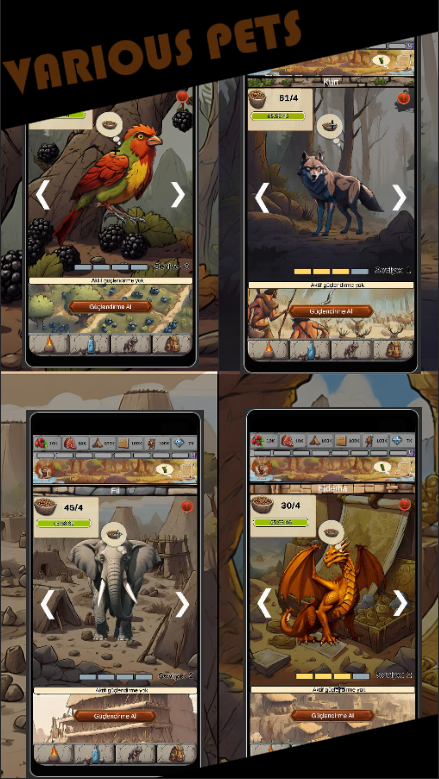

🔥 Lead Your Tribe & Build a Thriving Civilization! 🔥
Welcome to Idle Primitive Life, the ultimate idle survival and tribe-building adventure set in the prehistoric age! Step into a world of stone, fire, and early civilization. As the leader of your tribe, you will gather resources, tame wild animals, unlock hidden technologies, and overcome natural dangers to guide your people from primitive hunters to a powerful civilization.
This isn't just another idle clicker?it's a full-fledged survival simulation game mixed with strategic civilization development. Craft tools, manage your tribe, and expand your village into a sprawling prehistoric empire!